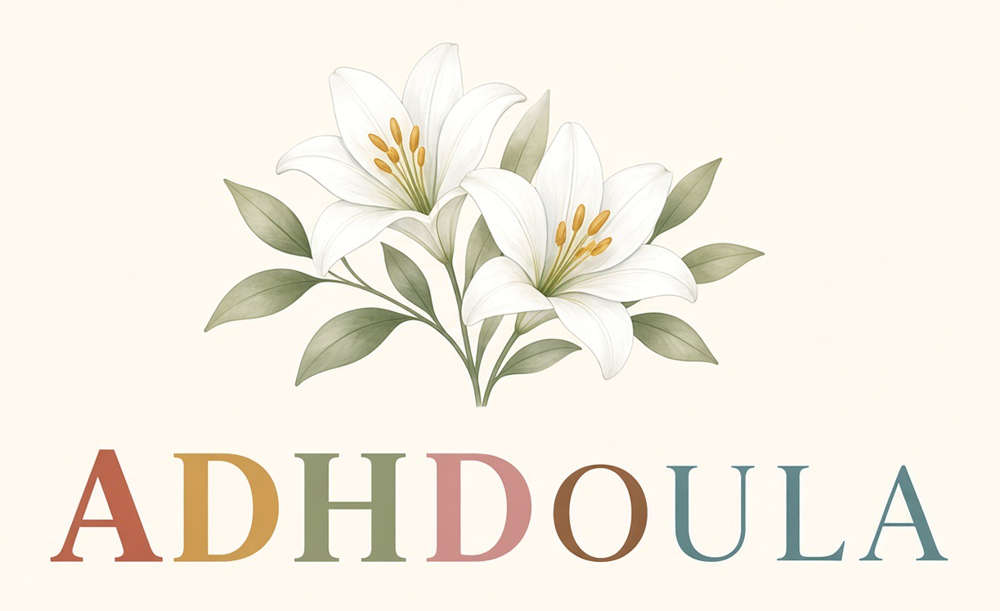

Aanwezigheid
Bij de bevalling blijf ik bij je. In de weken erna kom ik langs op momenten die we vooraf vastleggen.
Tilburg en 30 km
Ik ben Kayleigh Huijbregts. Ik ben de ADHDoula. Ik blijf bij je, met korte stappen en afspraken die blijven staan. Ik werk in Tilburg en tot 30 kilometer daaromheen. Daarbuiten is bespreekbaar.
Kennismaking
Ik start op 1 december 2026. Tot die datum kun je een kennismaking plannen en informatie vragen. Begeleiding bij de bevalling, postpartum en last-minute gaat in vanaf die datum.
De last-minute optie blijft bij de tarieven staan.
Drie dingen, steeds dezelfde. Zo weet je waar je aan toe bent.
Bij de bevalling blijf ik bij je. In de weken erna kom ik langs op momenten die we vooraf vastleggen.
We doen één onderwerp tegelijk. Wat we afspreken, kun je later nog eens nalezen.
Ik werk samen met je verloskundige en de kraamzorg. Medische beslissingen blijven bij hen. Wat ik wel en niet doe staat apart.
Ik blijf bij je, met korte stappen en afspraken die blijven staan.
Twee periodes, dezelfde stijl. Helder, rustig, en in jouw tempo.
Ik help je voorbereiden, ik ben bij de bevalling, en we sluiten af met een nagesprek.
Na de kraamweek gaat het leven door. Ik bied dan steun, naast de kraamzorg.
Een doula geeft praktische en emotionele steun rond de geboorte en in de weken erna. Ik bereid je voor, ik ben bij de bevalling, en ik kan daarna langskomen. De verloskundige blijft verantwoordelijk voor de medische zorg.
Bij de geboorte kom ik thuis of in het ziekenhuis. Na de kraamweek is er steun in huis, naast de kraamzorg.
Net zwanger? Eerst de verloskundige of huisarts. Daarna kan ik ernaast staan.
ADHDoula is er met en voor neurodivergente mensen. Ik heb zelf ADHD en autisme. Iedereen is welkom. Een diagnose is niet nodig.
Ik hou van duidelijke taal, een voorspelbare afspraak en de ruimte om te pauzeren. Die stijl staat open voor elk gezin. Het gebied is Tilburg en tot 30 kilometer. Korte antwoorden staan bij de vragen.
We starten met een kennismaking. We kijken of het klikt, wat je nodig hebt, en of ik ruimte heb rond je uitgerekende datum.